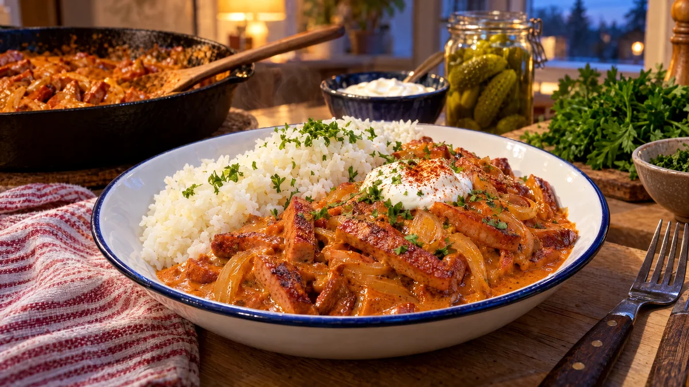

RESTFEST · RECEPTHuvudrätt
Rökig korv stroganoff med smörris och gräddfil
En falukorv, en gul lök och en tub tomatpuré. Korven bryns i stavar tills den får krispiga kanter och puttrar sedan i en djupt orange, rökig gräddsås med senap. Den läggs bredvid glänsande smörris och toppas med en klick gräddfil och persilja. Sveriges mest älskade vardagsmiddag i lördagskläder.
- Förberedelse
- 10 min
- Tillagning
- 25 min
- Portioner
- 4
- Nivå
- Nybörjare
 Det här behöver du
Det här behöver du
JÄMFÖRT MED DIN KYL
Tryck på + vid det du behöver köpa.
Smörris
Stroganoff
Till servering
Gör så här
- Koka riset enligt förpackningen. Rör ner smöret och saltet när det är klart och håll det varmt under lock.
- Dra av skinnet på korven och skär den i stavar, ca 1 × 5 cm. Skala och skiva löken.
- Hetta upp smör och olja i en stor stekpanna på medelhög värme. Bryn korvstavarna i 5–6 minuter, tills de har krispiga, gyllenbruna kanter. Stek i två omgångar om pannan blir trång, annars kokar korven i stället för att få färg.
- Lägg i löken och stek 3–4 minuter till, tills den är mjuk.
- Rör ner tomatpuré och båda sorterna paprikapulver och fräs i 1 minut, så att tomatpurén får djupare smak.
- Häll i grädde, vatten och senap. Låt sjuda i 5 minuter, tills såsen har tjocknat och blivit djupt orange. Smaka av med peppar. Salt behövs sällan, eftersom korven redan är salt.
Dekoration och servering
- Lägg upp riset i djupa tallrikar och skeda stroganoffen bredvid, inte över, så att båda syns.
- Toppa med en klick gräddfil, persilja och ett damm av rökt paprikapulver.
- Servera med knapriga saltgurkor eller en grönsallad vid sidan.
- Byt korven mot en vegokorv för en vegetarisk variant.
Mått och ugnstemperaturer
Måtten är svenska (dl, msk, tsk, krm). Ugnstemperaturerna gäller vanlig ugn med över- och undervärme; med varmluft, sänk med 20 grader.